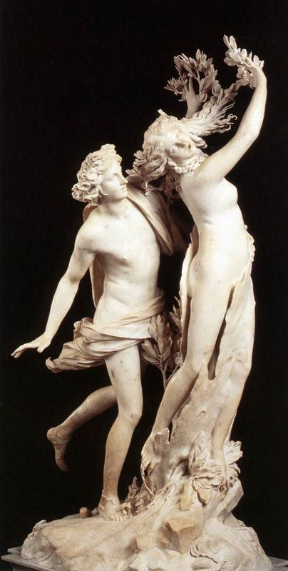

### Kinetic Sculpture
## Concept & Inspirations
I really love artistic portrayals of Apollo and Daphne, particularly the imagery of Daphne turning into a tree. I wanted to recreate this sculpture with a moving component, so that Daphne could grow branches and become encased in wood right in front of your eyes.

## Design Process
Originally I thought the moving component of my sculpture might involve pushing branches or leaves up through a hollow depiction of daphne using some system of gears or linkages. Upon further thought, I decided that this would not be as aesthetically pleasing as I would like it to be, and came up with a new solution.